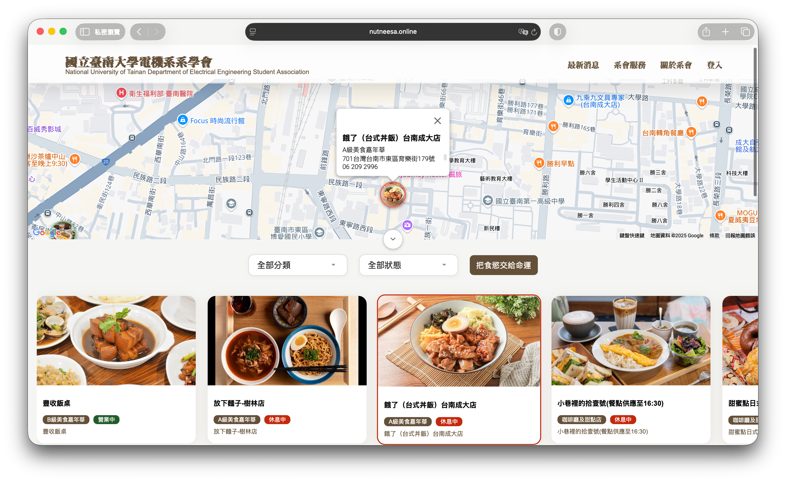
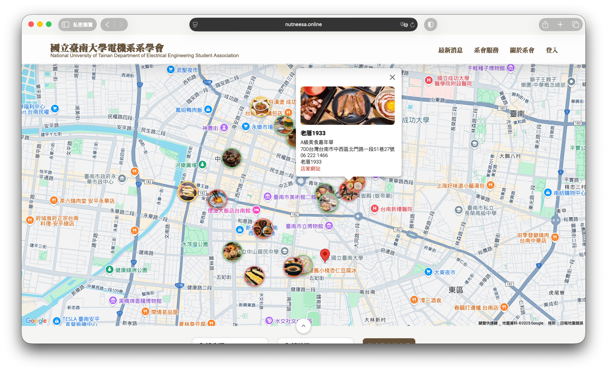
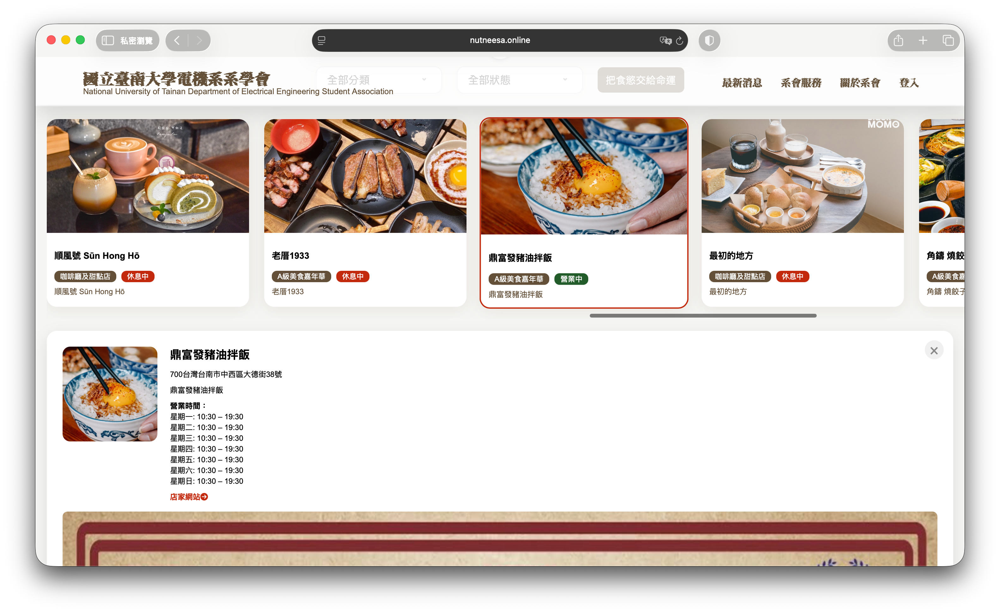

以防在學校走失
-
健身房
學校免費提供健身房資源，但是進入前要刷學生證，所以在第一次使用前，要先到中山館登記學號。
-
府城/榮譽校區圖書館
進入都需要刷學生證。
-
宿舍服務中心
網路上購買的貨，都可以寄到這邊。地址填寫府城校區地址，備註填寫系級+姓名。如果沒有備注欄，姓氏填系級，名字填姓名。
-
機車停車場
學校一共有六個停車場，分別為慶中、五妃、輔仁、懷遠、榮譽，皆採用車牌辨識系統，所以記得上「學務線上管理系統 > 學生機車線上申請作業」登記車牌。
-
分配停車場 慶中（緊貼籃球排球場） 五妃（最大停車場） 輔仁（男生宿舍專用） 南風（排球籃球場附近） 懷遠（全家旁） 榮譽（榮譽校區唯一） 輔仁、益友、寰宇住宿 懷遠、靜敬住宿 非住宿之大學部4年級以上及研究生 非住宿之大學部1-3年級
以防在學校網站走失
-
E-Course
重要度：SSR++
交作業｜看公告｜下載教材｜看期中、期末平時成績
https://ecourse.nutn.edu.tw/default.aspx -
教務學生系統
重要度：SSR+
棄選｜在學證明｜教學意見調查｜修課資料｜課表｜學期成績｜學期排名
https://academics.nutn.edu.tw/iSTU/default.aspx -
學務線上管理系統
重要度：SSR+
賃居登錄｜請假缺曠｜申請宿舍抽籤｜申請停車場｜兵役｜社團｜就學貸款｜學雜費減免｜助學金
https://student.nutn.edu.tw/iOSA/LogonBT.aspx -
選課系統
重要度：SSR
選課加選｜課後加簽｜退選退簽｜選課清單｜個人課表
https://academics.nutn.edu.tw/SelSys/content.aspx -
活動報名系統
重要度：SR
講座報名｜累積畢業門檻講座時數｜其他活動報名
https://campus.nutn.edu.tw/ActReg/ -
Ewant育網開放教育平台
重要度：SR
線上通識選修｜線上通識上課｜線上通識作業繳交
https://www.ewant.org/login/index.php -
南大入口NUTNSSO
重要度：R
學校各大網站入口｜不受校內IP限制
https://campus.nutn.edu.tw/SSO/entrance/Logon2.aspx -
Mail2000
重要度：N
學校信箱｜申請大專院校專屬優惠收信
https://mail.nutn.edu.tw/cgi-bin/login?index=1 -
Easy test線上學習測驗平台
重要度：N
TOEIC、全民英檢、iBT托福模擬測驗｜單字學習系統
https://easytest.nutn.edu.tw -
哈哈，系學會知道你們記不住
重要度：UR++
所以幫你們整理成Linktree了，記得加書籤！
https://linktr.ee/NUTNEESA
對人生開個外掛
-
gm2在手，世界我有
重要度：SSR++
學校的學號@stumail.nutn.edu.tw很難用，重要的驗證信還會經常被自帶的垃圾郵件管理系統過濾掉。因此申請@gm2.nutn.edu.tw的帳號，可以直接在gmail登入這個信箱。
先到gm2電子郵件帳號申請系統填資料
https://system.nutn.edu.tw/gmapply/申請新Gmail帳號 > 填入申請資訊 > 送出 > 漫長等待
-
Microsoft團體授權產品申請
重要度：SSR+
如果筆電本身沒自帶微軟office全家桶（Word｜PowerPoint｜Excel），可以先去申請。在之後的「電子電路實驗」與其他報告中，都會頻繁使用，請盡早申請。
先到國立臺南大學微軟學生校園授權序號申請系統填資料
https://system.nutn.edu.tw/ca_apply/填寫申請單 > 填入申請資訊 > 送出 > 漫長等待
-
MATLAB申請
重要度：SSR
MATLAB在後續「訊號與系統」等課程都會作為作業或補充出現，學校每年都會花經費在購買授權（已經包含在你學費了，而且這超貴，快去申請），他可以計算複雜的數學計算，也可以用圖表圖形化訊號。
先到MATLAB官方網站註冊帳號。請注意，註冊帳號僅能透過「@stumail.nutn.edu.tw」的帳號申請。申請後去Mail2000收信（如果找不到驗證信，請至最頂端的MailGates尋找）
https://it.mathworks.com/academia/tah-portal/national-university-of-tainan-31598368.html註冊帳號 > 填入申請資訊 > 送出 > 收驗證信 > 頭像 > Link License
輸入License Activation Key
你可以使用線上版或下載到電腦上
接下來四年
常見Q&A
精選全府城0間店家
限時動態不能錯過的0間A級美食
A級美食主打精美/復古/奢華的裝修及美食，視覺與味覺的雙重爆擊。
讓味蕾失去自主權的0間B級美食
B級美食主打深藏不露的美食，相較於A級美食，這些店更精於呈現味蕾的衝擊。
沐浴在大府城老厝的0間Cafe
大府城巷弄中的老厝咖啡，每一個各具特色，不論是讀書還是跑咖，一週一間任你也跑不完。
簡潔易操作的交互界面
美食地圖總覽
可摺疊地圖
即時查看菜單
流暢直覺的操作模式
開與合，你說的算
少一點查詢，多一點效率
讓命運支配你的胃
更多權益，敬請期待
付費會員專屬優惠
高頻率的資料更新
更多的待發掘餐廳
口説無憑，親試自明
前往美食地圖本期總支出
本期總收入
累計總支出
累計總收入
郵局帳戶餘額
保險箱餘額
系會會議記錄
| 序號 | 檔案名稱 | 類別 | 上傳日期 | 下載 |
|---|---|---|---|---|
| 載入中 | 載入中 | 載入中 | 載入中 | 載入中 |